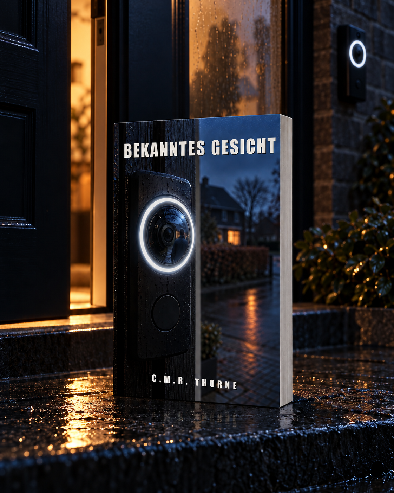

LOWLANDSPRESS
LOWLANDSPRESS

Reinier Klopper ist der Zahnarzt von Zuiderwaard. Er kennt die Zähne des halben Dorfes, und er ist einer, der das schlicht Arbeit nennt. An einem gewöhnlichen Samstagmorgen teilt seine Nachbarin einen Clip ihrer smarten Türklingel in der Nachbarschafts-App: Vor Reiniers eigener Haustür steht ein Mann, und die App setzt einen Namen darunter. Ferdinand. Sein bester Freund aus der Schulzeit, der seit zwanzig Jahren in Schweden lebt.
Achtzehn Nachbarn haben den Clip schon gesehen, als Reinier eines sicher weiß: Der Mann vor der Tür ist nicht Ferdinand. Warum er sich da so sicher ist, hat er einunddreißig Jahre lang niemandem erzählt. Im Sommer 1998 ertrank ein Mitschüler in den Westeinderplassen, und Reinier war der Junge auf dem Pfad, der nur sagte, was er gesehen hatte. Nicht, was er dachte.
Binnen zwei Wochen wendet sich das Dorf gegen den falschen Mann, und dann liegt wieder ein Toter in Reiniers eigener Straße. Um zu beweisen, was 1998 wirklich geschehen ist, muss er laut aussprechen, was er einunddreißig Jahre über seinen besten Freund gedacht hat. Und begreifen, dass eine Türklingel keine Gesichter kennt, nur Namen.
Ein Label ist kein Gesicht.
Produktdetails
- Verlag
- Lowlands Press
- Sprache
- Deutsch
- Seiten (Taschenbuch)
- 551
- Seiten (Hardcover)
- 430
- ASIN (Taschenbuch)
- B0HPVCV7B7
- ISBN (Taschenbuch)
- 979-8165585005
Der Anfang
Der Anfang des Buches, dieselben Seiten, die ein Shop zum Hineinlesen zeigt. Weiterlesen bei den Händlern oben.
Prolog
vertigo ring 4 · voordeur waterlelie 49 · 06/10/2029 09:02:57 beweging: persoon · zone 'stoep 47' · live beeld beschikbaar bekend gezicht herkend: ferdinand (vriend reinier) label sinds 21/12/2016 · overeenkomst 0,91 deurbel 49: niet ingedrukt · opname loopt tik om te bekijken · delen · corrigeren
Um zwei Minuten nach neun gab das Handy auf dem Küchentisch von Waterlelie neunundvierzig drei Töne von sich, ansteigend, und sagte dann mit einer Stimme, die niemandem gehörte: bekanntes Gesicht erkannt. Danach einen Namen.
Es regnete. Das Wasser lief in geraden Bahnen am Küchenfenster herunter und sammelte sich unten im Falz. Am Tisch saß Herminia Klaver, sechzig, in einer grauen Strickjacke, bis oben hin zugeknöpft, die Lesebrille tief auf der Nase. Vor ihr lag ein Tischkalender, aufgeschlagen bei der laufenden Woche. Bei Dienstag stand Stadtteilrat 20:00, und darunter eine Zeile in blauem Kugelschreiber, mit einem a, das sich nicht schloss. Neben dem Kalender ein Becher Kaffee, von dem noch Dampf aufstieg. Neben dem Becher das Handy, den Bildschirm nach oben.
Sie legte den Stift in den Falz des Kalenders und nahm das Handy in die Hand.
Auf dem Bildschirm war nicht ihre eigene Haustür. Die Kamera neben ihrer Tür blickte schräg zur Seite, über das niedrige Gartentor und an der Hecke entlang, und erfasste in der Ecke des Bildes auch die Haustür von Nummer siebenundvierzig. Dieser Ecke hatte sie vor Jahren in der App einen eigenen Namen gegeben. In dieser Ecke stand ein Mann.
Herminia rückte ihre Brille gerade und tippte auf das Bild. Es wurde groß.
Ein Mann in einer blauen Regenjacke, die Kapuze halb vom Kopf gerutscht. Kahl am Scheitel, hellblond an den Schläfen. Er stand vor der Tür von siebenundvierzig und sah auf diese Tür, nicht auf die Kamera, die ihn von der Seite im Bild hatte. Um seinen Kopf zeichnete die App ein dünnes weißes Quadrat, das sich mit ihm bewegte. Unter dem Quadrat stand eine Zeile Text.
Ferdinand, Freund Reinier.
Der Mann drückte auf die Klingel von siebenundvierzig. Einmal. Hinter dem kleinen Fenster neben der Tür blieb es dunkel, und auf der Matte lag die Morgenzeitung noch in ihrer Plastikhülle.
Er wartete. Er drückte kein zweites Mal.
Herminia tippte auf teilen. Die App fragte, wohin. Sie wählte die Gruppe, die ganz oben stand, Waterlelie & omstreken, und tippte mit einem Daumen, die Brille noch auf der Nase:
Reinier, steht dein Freund Ferdinand vor deiner Tür?
Sie drückte auf Senden. Ihre Frage erschien ganz oben in der Gruppe, über einer Nachricht über eine Mülltonne, die der Wind umgelegt hatte, und dem Foto einer grauen Katze, die seit Donnerstag nicht nachhause gekommen war. Unter der Frage erschien ein graues Feld mit einem kleinen Dreieck darin: der Clip, noch am Laden.
Sie ging zurück in die Türklingel-App.
Vor der Tür sah der Mann auf seine Uhr. Er drehte sich halb um, zur Kamera hin, und die Kapuze rutschte noch ein Stück weiter von seinem Kopf. Das Quadrat folgte seinem Gesicht. Die Zeile darunter änderte sich nicht. Dann ging er die Stufe hinunter, am Gartentor vorbei, und aus dem Bild.
Die App schrieb Person verlässt Bild, setzte die Länge der Aufnahme dazu und legte den Clip zu den anderen Clips dieser Woche. Unter dem Clip erschien in kleiner Schrift eine Frage, Stimmt diese Erkennung?, und daneben ja und nein.
Herminia legte das Handy auf den Tisch, den Bildschirm nach oben.
Sie stand auf, ging durch den Flur ins vordere Zimmer und schob die Gardine eine Handbreit zur Seite. Vor der Tür von siebenundvierzig war niemand. Es regnete auf das Gartentor, auf die Zeitung in ihrer Hülle, auf die Fliesen des Vorbaus, wo das Wasser in den Fugen stehen blieb. Auf dem Radweg am Teich war niemand unterwegs. Sie ließ die Gardine zurückfallen.
In der Küche setzte sie sich wieder hin. Sie drehte den Kalender eine Vierteldrehung zu sich, las, was bei Dienstag stand, und schrieb nichts dazu. Sie trank von dem Kaffee. Dann nahm sie das Handy wieder in die Hand und stellte es aufrecht gegen den Becher, den Bildschirm zu sich.
Die Nachbarschafts-App war noch offen. Unter ihrer Frage lief ein Zähler.
Waterlelie & omstreken · gelesen von 18 · 09:04
Unter dem Zähler erschienen Daumen, einer nach dem anderen, von Leuten, die an einem nassen Samstagmorgen ihr Handy schon in der Hand hatten. Niemand schrieb etwas zurück.
Jemand setzte ein Herz darunter.
Kapitel 1
Der Samstag begann mit Nebel, der nicht weichen wollte. Reinier saß auf dem Klappstuhl vor dem Ferienhaus, beide Hände um einen Becher Kaffee, und sah hinaus auf den kleinen See, den der Prospekt einen Teich genannt hatte und der bei diesem Wetter eher ein Sumpf mit Weiden war. Jip stand schon eine ganze Weile mit seiner Angel am Wasser, irgendwo rechts, wo die Zweige tief hingen. Sien hatte ihr Buch auf dem Schoß und las nicht. Sie blickte auf dasselbe Wasser wie Reinier, in dem Pullover von ihm, von dem er geglaubt hatte, er sei verloren gegangen, und sie hatte die Knie bis unter die Wolle hochgezogen.
Roosje saß neben ihm, im gleichen Stuhl wie er, nur tiefer eingesunken. Sie hatte gesehen, dass er woanders saß als in diesem Stuhl; sie hatte es früher gesehen als er.
„Rein“, sagte sie. „Du hast dreimal auf dein Handy geschaut.“
„Herminia.“
„Was will sie denn?“
„Sie hat etwas geschickt.“
Er sagte es so, wie er in der Sprechstunde einem Patienten sagte, dass ein Weisheitszahn raus musste: ruhig, mit einer Stille dahinter, die dem anderen eine Sekunde ließ, um noch etwas zu fragen. Roosje fragte nichts. Er holte das Handy aus der Tasche seiner Regenjacke und öffnete die Nachbarschafts-App, Waterlelie & omstreken. Die Nachricht stand ganz oben. Achtzehn Nachbarn hatten sie gelesen; unter dem Text standen ein paar Daumen und ein einzelnes Herz.
Reinier, steht dein Freund Ferdinand vor deiner Tür?
Unter der Frage ein kurzer Clip, das Vorschaubild schon geladen: die Haustür ihres eigenen Hauses, schräg von der Seite. Reinier tippte den Clip an. Das Bild ruckte beim Start einmal, und die App setzte ihre feste Zeile darunter, in einer Schrift, die niemand im Viertel je ausgesucht hatte. Vertigo Ring 4 · 06/10/2029 · 09:02:57 · Haustür Waterlelie 49 · bekanntes Gesicht: Ferdinand.
Vor der Tür stand ein Mann. Er trug eine blaue Regenjacke mit einer Kapuze, die halb heruntergerutscht war. Er sah auf die Tür von Reiniers eigenem Haus, über die Hecke hinweg, nicht auf Herminias Türklingel. Sein Gesicht kam im Dreiviertelprofil ins Bild; sein Kopf, kahl am Scheitel und hellblond an den Schläfen, neigte sich nach vorn, als er die Klingel drückte. Es wurde nicht geöffnet. Der Mann wartete, drückte kein zweites Mal, sah kurz auf seine Uhr. Dann drehte er sich halb zur Kamera. In dem Moment rutschte die Kapuze ein Stück weiter zurück, und der Rand einer Brille wurde sichtbar. Ein dünnes Gestell, rund, der obere Rand etwas schwerer als der untere.
Der Clip endete.
Reinier sah auf das stille Wasser vor sich. Jip holte seine Schnur ein und warf neu aus.
„Ferdinand?“, sagte Roosje. „Der lebt doch seit zwanzig Jahren in Schweden?“
„Der lebt seit zwanzig Jahren in Schweden.“
„Was macht er dann vor unserer Tür?“
„Das ist er nicht.“
Roosje legte den Kopf schief, als wollte sie den Satz noch einmal hören, in einer anderen Tonart. Er ließ das Handy in seinem Schoß liegen, den Bildschirm nach oben, und korrigierte nichts.
„Herminias App sagt, dass er es ist“, sagte Roosje.
„Herminias App sagt, dass dieses Gesicht ein Label trägt, das sie irgendwann einmal eingegeben hat.“
„Das Label Ferdinand.“
„Das Label Ferdinand. Das ist dreizehn Jahre alt.“
„Und das Gesicht in dem Video?“
Er startete den Clip noch einmal. Der Mann drehte sich, die Kapuze rutschte, die Brille kam nach vorn. Reinier hielt das Bild bei Sekunde zwei an und ließ den Finger über dem Bildschirm schweben, als wollte er auf etwas zeigen, das nicht da war. Das Gesicht blieb dort hängen, halb im Nebel der Aufnahme. Es war das Gesicht von jemandem, der Ferdinand ähnlich sah. Von jemandem, der Ferdinand so ähnlich sah, dass das wenige, was Reinier von Ferdinand in Erinnerung hatte, sich mühelos darüberlegte, und das sagte mehr über sein Gedächtnis als über dieses Gesicht.
„Jemand, der ihm ähnlich sieht“, sagte er.
Roosje wartete darauf, dass er sagen würde, wer.
Er sagte es nicht. Er sah auf die Brille auf dem angehaltenen Bild und ihm fiel, gegen seinen Willen, etwas wieder ein, das er lange weggeschoben hatte: eine Kieferform, die er als Junge noch nicht hatte benennen können, weil er damals noch kein Zahnarzt war, und einen Klassenkameraden, der am letzten Schultag mit der Brille eines anderen in die Kantine gekommen war. Dieselbe runde Form. Derselbe etwas schwerere obere Rand. Später, irgendwann um die Jahrtausendwende, hatte er dieses Gestell noch einmal gesehen, auf einem Foto bei einer Geburtstagskarte, die durch das Haus der Kloppers gegangen und danach weggeworfen worden war.
„Rein.“
„Ich bin mir nicht sicher“, sagte er, und das war wahr. „Ich weiß nur, dass es nicht Ferdinand ist.“
Er schaltete das Handy aus und legte es auf den Boden, zwischen seine Schuhe. Er trank seinen Kaffee.
Am Wasser rief Jip, dass er nichts fing. Sien reagierte nicht.
„Ich geh mal zu ihm“, sagte Reinier und stand auf.
Er ging hinter seinem Sohn am Ufer entlang zu den Weiden. Es war weiter, als er vom Stuhl aus geschätzt hatte, und der Boden war weicher, als er aussah. Jip warf neu aus; die Pose sank zwischen den Blättern weg. Reinier hockte sich neben ihn ans Ufer.
„Papa“, sagte Jip. „Sien hat heute Morgen nichts gesagt.“
„Nein?“
„Nicht zu mir, nicht zu dir. Sie hat Mama guten Morgen gesagt, und das war’s.“
„Sien ist siebzehn“, sagte Reinier. „Siebzehn ist ein Alter, in dem man nicht immer reden muss.“
„Wann muss man dann reden?“
Reinier blickte auf die Pose. „Wenn jemand fragt.“
„Oh.“
Jip holte die Schnur ein, setzte seine Pose ein kleines Stück weiter und warf neu aus. Die Antwort reichte ihm offenbar vollkommen aus. Reinier blieb noch einen Moment in der Hocke und sah zu, wie das Wasser sich über dem Blei schloss. Dann richtete er sich auf.
Auf dem Rückweg zu den Stühlen hielt er das Handy lose in der Hand, ohne hinzusehen. An der Tür des Häuschens stand Sien, den Pullover jetzt um die Schultern geknotet, das Buch unter dem Arm. Sie sah ihn an, ohne irgendetwas an ihrer Haltung zu verändern.
„Papa“, sagte sie.
„Mama sagt, Herminia hat etwas geschickt.“
„Ja.“
„Was?“
„Ein Video von jemandem, der vor unserer Tür stand.“
Sien nickte. Sie drückte mit der flachen Hand gegen den Türpfosten, als prüfte sie, ob das Holz nachgab.
„Wer stand denn vor der Tür?“
„Jemand, der einem alten Freund von mir ähnlich sah.“
Sie nickte noch einmal, langsamer jetzt, und ging ins Haus, ohne die Tür hinter sich zuzumachen.
Reinier setzte sich wieder auf den Klappstuhl. Roosje war aufgestanden, um frischen Kaffee zu holen, und der Nebel hatte sich einen halben Meter gehoben; die Weiden hatten wieder ein unteres Ende. Er nahm das Handy, öffnete den Clip noch einmal und hielt ihn an derselben Stelle an wie vorhin.
Die Brille. Rund, dünnes Gestell, oben schwerer als unten.
Der Kiefer, der darunter zu sehen war, breit, mit einem kurzen Kinn. Die hellblonden Härchen an der Schläfe. Er kannte dieses Gesicht nicht von gestern und nicht vom letzten Jahr. Er kannte es aus der Kantine der Blauwe Poort, vom letzten Schultag des vorletzten Schuljahres, als kurz vor dem Klassenfoto Brillen getauscht worden waren, weil jemand das für einen guten Witz gehalten hatte.
Vor einunddreißig Jahren. Ferdinand war den Rest des Nachmittags mit dem Gestell eines anderen herumgelaufen, und auf dem Foto stand er ohne seine eigene Brille, und der Lehrer, der die Abzüge verteilte, hatte laut dazugesagt: Broeksma schreibt man hinten mit d, Jungs, nicht mit t. Als wäre die Schreibweise das Einzige gewesen, was an diesem Tag geradegerückt werden musste.
Wer auf diesem Foto die getauschte Brille trug, links von Reinier, mit breitem Kiefer und kurzem Kinn, das war nicht Ferdinand gewesen. Reinier hatte das immer gewusst, so wie man weiß, welcher Zahn in einem Mund fehlt: Man sieht es sofort, und man sagt es erst, wenn jemand danach fragt.
Reinier legte das Handy mit dem Bildschirm nach unten auf seinen Oberschenkel. Er trank seinen Kaffee aus und hielt den Becher in beiden Händen, bis er die Wärme nicht mehr spürte. Am Wasser warf Jip neu aus; das Geräusch des Bleis kam eine Sekunde später als der Kreis im Wasser. Im Haus schob Sien irgendwo einen Stuhl über den Boden, einmal, und danach war es dort still.
Roosje kam mit der Kanne zurück und goss seinen Becher voll, ohne zu fragen. Sie setzte sich, sah auf den See, sah dann zur Seite, zu ihm.
„Rein“, sagte sie. „Wer ist es dann?“
Das ist Diederik.